← 返回阅读库 · 原论文目录
论文讲解阅读文档 · 表征学习 · v201
Object Discovery and Representation Networks[2203.08777]
视频时长 00:05:51；讲解文字 2,866 字符；提取讲解画面 15 张。按视频原顺序阅读，每段文字保留时间戳。
文字来自整段视频的自动语音转写，按自然停顿分段，并与 PPT / 论文页面 / 演示画面对齐。未将讲解压缩为摘要；术语、数字和口述公式请结合画面及原论文核对。 阅读稿已校正规范部分明确术语误识别；原始逐字稿和每处修改记录另行保留。
讲解画面为源视频截图（640×360），不是可编辑 PPT 文件。全片按每秒 2 帧扫描内容变化，逐步展开页保留；连续动画保留代表画面。清晰度受源视频限制。
下载完整资料包 · 含离线 HTML、PDF、Word、全部 PPT 画面和字幕。
原论文与材料
Object discovery and representation networks · 下载完整 PDF（27 页）
按时间阅读
00:00:00–00:00:14 · 画面 001
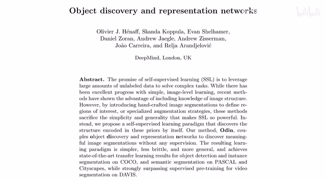
00:00:00–00:00:14 · 画面 001大家好啊，今天我们来快速数一篇论文，Object Discovery and Representation Networks，这个 Odin 他呢是我们之前刚刚介绍这个 DetCon 他的直接的后续，第一作者呢也是同一个人，那我们直接来看，那之前这个 DetCon 呢，我们是要用这个 Contrastive Learning 去解决这个 Semantic Segmentation 和这个 Object Detection
00:00:14–00:00:49 · 画面 002
00:00:14–00:00:49 · 画面 002针对这两种下游任务做更加仔细的这个 contrastive learning 的设计，那具体来说呢，就是 object level 的这种 contrastive learning，但是呢，这篇工作呢有一个很致命的缺陷，那就是它需要依赖外部的这个 mask 的输入，无论是你使用标准的算法还是说手动给一个，甚至说甚至说直接化成这个方格就放弃治疗这种，但是它都需要一个 mask 来把每一个物体呢给它找出来那现在呢，这篇文章呢就要来讨论一下我们怎么样把这个东西拿走，就是让我们的网络去自己发现这个 object，所以呢，它叫这个 object discovery，那么在此之前，我们快速的回顾一下，以这个例子来说，一张原始图像对吧，做 data augmentation 得到两个图像，它包括这个 scaling 和这个 cropping 嘛，所以呢，你可以看到这两个图像它对应的是原始图像中的这两个框的位置，那么两个图像送到我们的 encoder 里面得到一个 feature
00:00:49–00:00:51 · 画面 003
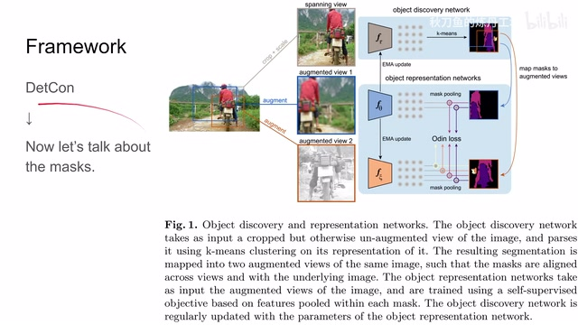
00:00:49–00:00:51 · 画面 00300:00:51–00:00:59 · 画面 004
00:00:51–00:00:59 · 画面 00400:00:59–00:02:34 · 画面 005
00:00:59–00:02:34 · 画面 005feature 呢，拿了我们的这个 mask 做这个 mask pooling，也就是说，我对每一个 object 它的这个 mask 上标记的所有的 vector 给它求个平均值，求出来平均值的这个 feature 呢，作为我们的一个 feature 来代表整个这个 object，所以到最后呢，就是每个 object 它有一个 feature，这个都是之前一样的东西，那么有所区别的呢，首先是第一个这个在计算这个 loss 的时候，那么因为在本文中呢，作者采用的是这个 BYOL 的设计
所以你可以看到呢，从这个 online network 到这个 target network 是有这个 EMA 的同时呢，使用的 loss 呢也是有方向性的，就是从 v1 到 v2 和从 v2 到 v1 它是两个不同的 loss，那么对于两个 feature 它们的 similarity 呢是这个 cosine similarity，这个没问题，那与原版 BYOL 有区别呢，就是加这个 alpha 这个 temperature，用它呢来改善我们这个分布的是更加均匀呢还是更加集中
那么有了这个 similarity 之后呢，开始组建 loss，比如说从 v1 预测 v2，那么这里呢区别于 byol 更像这个 SimCLR 这种形式，就是用了这个负样本跟之前呢是一样的，那么当然因为我们的网络不对称的原因，所以有根据 v1 预测 v2 那当然也有根据 v2 预测 v1 那这个呢是标准的一个这个 DetCon，那么这条视频来自 bilibili 的秋刀鱼的链丹工坊，理论上您不应该从其他任何平台上看到这个视频
00:02:34–00:02:36 · 画面 006
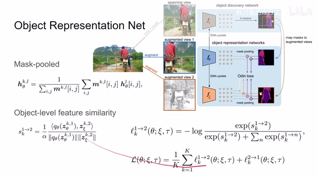
00:02:34–00:02:36 · 画面 00600:02:36–00:02:58 · 画面 007
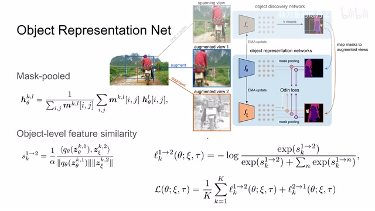
00:02:36–00:02:58 · 画面 007那么如果您不幸在其他平台上看到了，那么我真诚的希望您没有为这个视频而付费，那到这里呢，这部分工作呢跟之前是很相近的，下面呢我们就要来看它怎么样解决这个 mask 的问题，就是这里我们如何拿到这个 mask，那解决的方法呢也很简单，这里呢做着把我们的这个 online network 直接复制一份，还是一个 encoder 加两层 mlp 的这个构型，这个时候的输入图像呢，因为我们有两个不同的 view，我们就取
00:02:58–00:04:06 · 画面 008
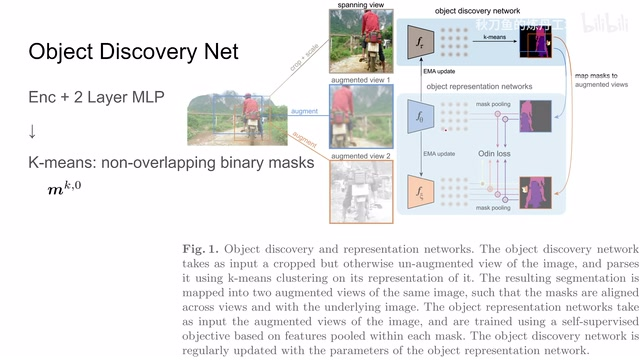
00:02:58–00:04:06 · 画面 008能把这两个 view 包起来的最小的这么一个矩形，这样子呢，确保我们提 feature 提 mask 的时候能够涵盖到这个两个 view 所有的像素，那么然后就提 feature 吧，过 mlp，那么得到一个这个大的 tensor，这里呢作者用的是这个 k-means，相当于每一个像素点上的位置它有一个长的这个 feature vector，用它来描述这一个像素点嘛，然后对所有的像素点做这个 k-means 聚类，那么这样子聚出 k 类来呢，我们就认为有 k-object然后呢把它送到下面的这个 object representation network 里面去做我们的 contrastive learning 就可以了。那么这个时候有朋友就说了，等一下，这个 k-means 它不是不可以微分的吗？我的梯度怎么能通过这个 mask 传递过来呢？答案是啊，确实不能。那怎么办呢？这里呢，作者用了非常直接的方法，就是 ema，就是直接把这边的 online network 它的参数呢拷贝到这边来。那总的来说呢，就是我们根据这个 mask pooling 之后这个 contractive 这个 loss
00:04:06–00:04:42 · 画面 009
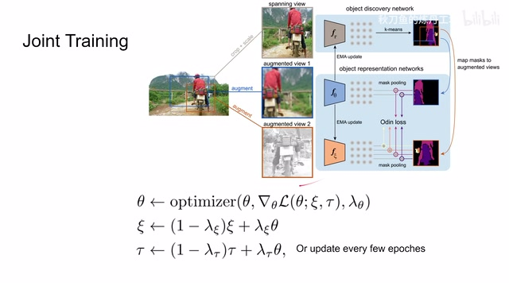
00:04:06–00:04:42 · 画面 009去把我们的这个 online network 也就是这一只给它训练出来。然后呢，按照这个式子 EMA 嘛，把这个 target network 更新一下。同样的式子，把我们的这个 discovery network 也给它更新一下。那么当然，作者这里也讨论了说，如果我们换一种更新的方法，不是用这种连续的 EMA 啊，而是比如说过上 100 个 epoch 我去把这个权重复制到这边来，过上 100 个 epoch 再把这个权重复制到这边来，作者也做了这个讨论。
这个就是设计上的细节了。那么下面我们直接来看到作者汇报的结果，首先是 Object Detection 和 Instance Segmentation，这些都是在 ImageNet Pre-train 之后然后再迁移到 COCO 上的。主要是 detcon 它的 b 表示 BYOL baseline。你可以看到本文的方法的改进，当然最重要的改进就是我们不再依赖于外部给我们输入 mask 了，我们自己现在能够产生 mask 了。那么还有到后面 transfer 到不同的数据集然后汇报的是 MIOU。
00:04:42–00:05:03 · 画面 010
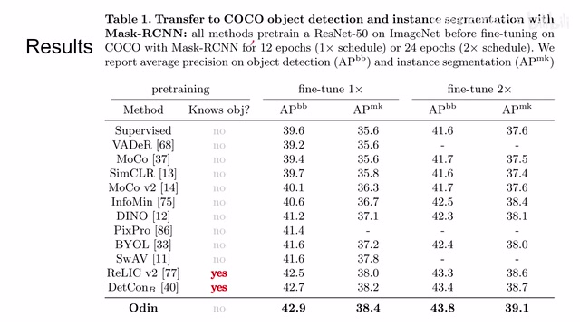
00:04:42–00:05:03 · 画面 01000:05:03–00:05:13 · 画面 011
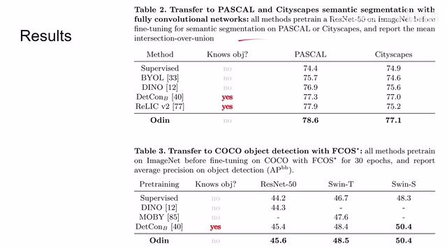
00:05:03–00:05:13 · 画面 011这边呢是这个 object detection，感兴趣的朋友呢非常推荐你去原文查看。那么最后呢还有 ablation，就是我们之前说的两种关于更新这个 discovery network 它的设计，还有我这个 k-means 应该给多少个物体啊？在原来这个 detcon 里面是 16 个嘛。那这里呢直接就是聚出 16 个类来，也避免什么随机采样的东西了，就省事了，每个图像都是 16 个，它一起大家都一样对吧？那这边呢是一些结果。那总的来说呢，这篇是针对这个 detcon 的。
00:05:13–00:05:33 · 画面 012
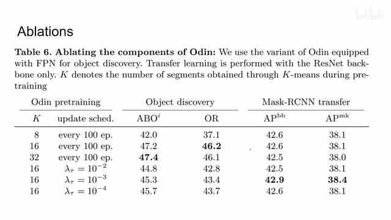
00:05:13–00:05:33 · 画面 01200:05:33–00:05:34 · 画面 013
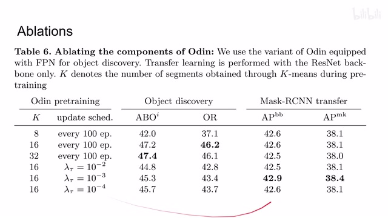
00:05:33–00:05:34 · 画面 01300:05:34–00:05:50 · 画面 014
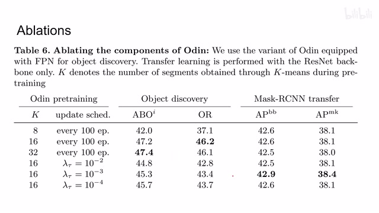
00:05:34–00:05:50 · 画面 014直接的一个改进，我觉得这个工作量跟上一篇合成一篇发成一篇文章比较好，它能水出两篇呢也是有点水平的。那么以上就是我对这篇文章的一个快速的整理，那么感谢您的收看，再见。
00:05:50–00:05:51 · 画面 015
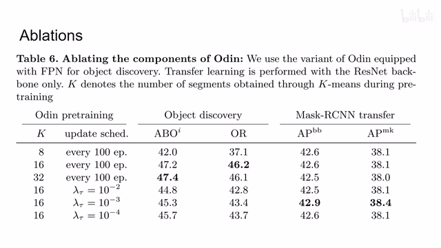
00:05:50–00:05:51 · 画面 015转写与来源说明 · 0 个自动复核提示
保留 13 个原始语音片段，0 个片段触发自动复核提示。提示仅用于定位可能的术语、重复或识别问题，不等于已确认错误。
讲解画面为源视频截图（640×360），不是可编辑 PPT 文件。全片按每秒 2 帧扫描内容变化，逐步展开页保留；连续动画保留代表画面。清晰度受源视频限制。
原视频：paper/合集_2026-10-16_表征学习/[论文速览]Object Discovery and Representation Networks[2203.08777].mp4
SHA-256：2bbf0690522ef9bfa2d06d3fc7f4708d78a36e4f62c8cfd58c7c65978ce8837b
全文按视频语音与画面制作。原论文可从上方链接下载；完整资料包保留全文、原始逐字稿、字幕和校对记录。